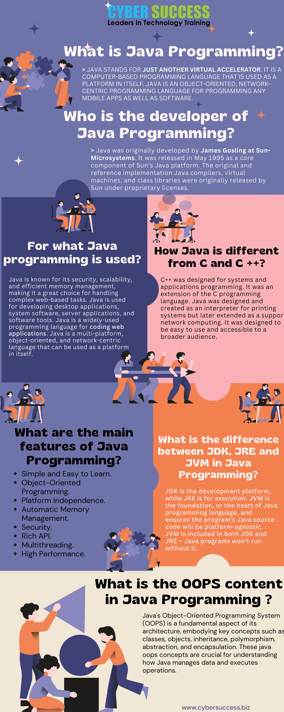

Introduction
JavaScript (JS) is a versatile, high-level programming language primarily used to add interactivity and dynamic behavior to websites. It is one of the core technologies of the World Wide Web, alongside HTML and CSS.
Key Features of JavaScript
- Client-Side Scripting: Runs directly in the browser to create interactive web pages.
- Dynamic Content: Can modify HTML and CSS in real time without reloading the page.
- Event Handling: Responds to user actions such as clicks, typing, or form submissions.
- Asynchronous Operations: Handles data fetching and background tasks smoothly.
- Cross-Platform: Supported by all major browsers and can also run on servers using Node.js.

>JS

>FEATURES OF JAVA

>INFORMATION GRAPHIC
JavaScript helps build dynamic and responsive web applications.
Learning and Practice Resources
- 🎥 Video Tutorial: Watch JavaScript Tutorial on YouTube
- 💻 Practice Exercises: Visit W3Schools Java Exercises
- 📘 Reference Book: Download Java Notes (IIT Kanpur)
Interesting Facts
📖 Fun Fact About JavaScript
JavaScript was created in just 10 days by Brendan Eich in 1995 while working at Netscape!
💡 Tip for Beginners
Always use console.log() to debug and understand what your code is doing step by step.